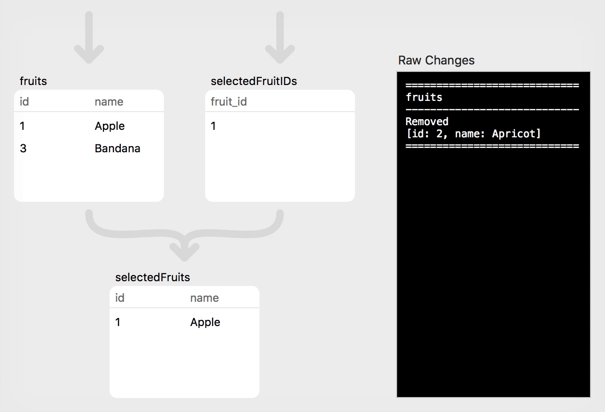
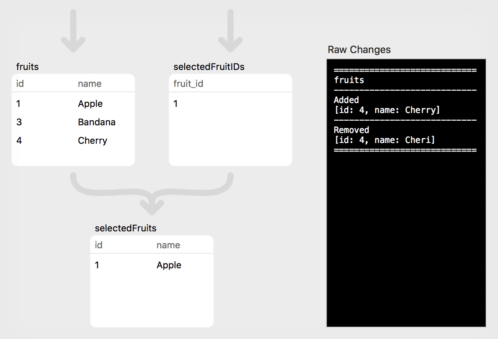
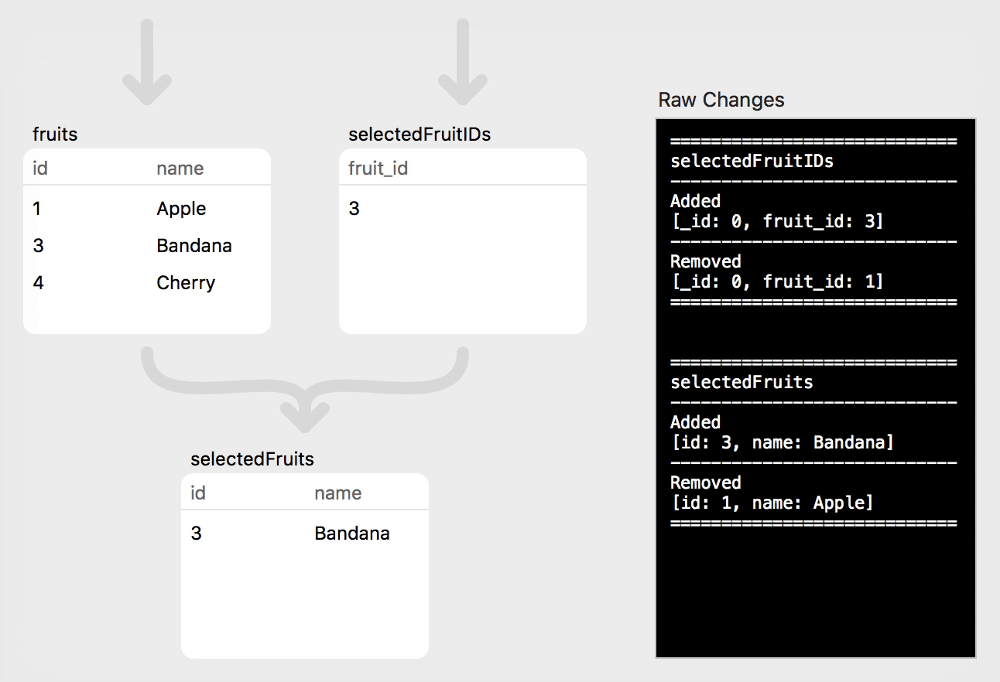

PLRelational: Storage Formats
This is our latest entry in a series of articles on PLRelational. For more background, check out these other articles in the series:
- Reactive Relational Programming with PLRelational
- Introduction to Relational Algebra using PLRelational
- PLRelational: Observing Change
We've been talking a lot lately about PLRelational and all the fancy stuff it does. However, we've been glossing over a fundamental part of it: how it actually stores data. After all, PLRelational is a data persistence framework at its core.
PLRelational's relations break down into two categories. There are relations which store rows, and there are relations which derive their contents by performing some operation on other relations. Many of the relations which store rows do so by persisting them to disk.
Memory Relations
Let's start with one that doesn't persist its contents, just for simplicity. The basic interface is the same, so it provides a good foundation.
The MemoryTableRelation class is a relation which, as the name indicates, stores its data in memory. You create one with a scheme:
let people = MemoryTableRelation(scheme: ["id", "name", "quest", "favorite-color"])
Once you have that, you can add, update, and delete rows:
people.asyncAdd(["id": 1, "name": "Lancelot",
"quest": "to find the holy grail", "favorite-color": "blue"])
people.asyncAdd(["id": 2, "name": "Galahad",
"quest": "to find the holy grail", "favorite-color": "blue"])
people.asyncUpdate(Attribute("id") *== 2, newValues: ["favorite-color": "yellow"])
people.asyncDelete(Attribute("id") *== 2)
Of course, this is purely in memory, and the data is lost once the people relation is destroyed. It can still be useful to represent transient data, but doesn't persist anything.
Property List Files
We might imagine taking this and building our own persistence on top of it by saving data to a property list file. We'd define a simple way to turn rows into property list objects. To save, we'd fetch the rows in the relation, convert them to property list objects, and save the whole thing into a file. To load, we'd load the property list file, convert it to rows, and add them to the relation.
This is essentially what PlistFileRelation is. It's an in-memory relation that's backed by a property list file. We can change people to use PlistFileRelation by changing the initialization:
let people = try PlistFileRelation.withFile(plisturl,
scheme: ["id", "name", "quest", "favorite-color"],
primaryKeys: ["id"], create: false
).orThrow()
It can then be used just like the in-memory version of people. It will automatically load data from the property list file, and when you want to save changes back to that file, call save:
let result = people.save()
if let error = result.err {
// handle error
}
You may have noticed the primaryKeys parameter in the code that creates the relation. Specifying primary keys allows PLRelational to optimize queries involving those attributes, at the expense of some overhead when adding, removing, or changing rows. MemoryTableRelation is assumed to always contain relatively small amounts of data and doesn't have this option.
Property List Directories
A single property list file works well for moderate amounts of data, but it requires reading the entire file at once, and rewriting the entire file on save. This overhead can become significant once you start working with large amounts of data.
PlistDirectoryRelation solves this problem by storing the rows in individual files within a directory. This allows reading and writing individual rows separately.
We can use this by once again changing the initializer for people:
let people = try PlistDirectoryRelation.withDirectory(dirurl,
scheme: ["id", "name", "quest", "favorite-color"],
primaryKey: "id", create: true
).orThrow()
As with PlistFileRelation, changes are not saved automatically. Instead, a delta is kept in memory, and then changes can be flushed to disk by calling save:
let result = people.save()
if let error = result.err {
// handle error
}
When creating a PlistDirectoryRelation, it takes a primaryKey parameter, singular. Unlike PlistFileRelation, PlistDirectoryRelation can only have a single primary key. This is due to how it efficiently locates the files for each row.
The filename for a row's plist is determined from the value for the primary key in that row. The filename is derived from that value by converting it to a canonical representation in raw bytes and then taking the SHA-256 hash of that representation. The result is something like:
4cd9b7672d7fbee8fb51fb1e049f690342035f543a8efe734b7b5ffb0c154a45.rowplist
Because the mapping is deterministic and based only on the value of the primary key, equality queries for the primary key can be done quickly. In this example, the deletion at the end will compute the filename for the ID of 2 and then mark that file for deletion. Joins or selects involving the primary key will efficiently look up only the data they need.
Property List Databases
Your app will probably use multiple stored relations for different kinds of data. This may be a mix of property list files and directories. For example, you might place metadata that's needed everywhere in property list files, while large data that should only be loaded on demand is in a directory.
The PlistDatabase class handles this. You create it with a list of relation specs, which describe each relation's scheme, primary keys, path, and name. It then handles creating, loading, and saving all of those relations for you, and bundles them all into a single directory structure. This example creates a people relation stored in a file and a people-images relation stored in a directory, since images are probably large:
let db = try PlistDatabase.create(rootURL, [
.file(
name: "people", path: "people.plist",
scheme: ["id", "name", "quest", "favorite-color"],
primaryKeys: ["id"]
),
.directory(
name: "people-images", path: "people-images",
scheme: ["id", "image-data"],
primaryKey: "id"
)
]).orThrow()
let people = db["people"]!
let images = db["people-images"]!
people and images will contain whatever data currently exists there, and can be manipulated with the standard Relation methods:
people.asyncAdd(["id": 1, "name": "Lancelot",
"quest": "to find the holy grail", "favorite-color": "blue"])
people.asyncAdd(["id": 2, "name": "Galahad",
"quest": "to find the holy grail", "favorite-color": "blue"])
people.asyncUpdate(Attribute("id") *== 2, newValues: ["favorite-color": "yellow"])
people.asyncDelete(Attribute("id") *== 2)
images.asyncAdd(["id": 1, "image-data": imageData])
To save changes back to disk, call saveRelations:
let result = db.saveRelations()
if let error = result.err {
// handle error
}
This will save all of the individual relations.
Dropbox/Cloud Sync
Property list storage works well for syncing to Dropbox and other cloud storage, which tend to work with file granularity. Placing a file relation in cloud storage allows the whole relation to be synced as a single unit, and using a directory relation allows individual rows to be added, updated, and deleted independently.
PLRelational doesn't directly talk to cloud storage, but it does have some special facilities to accommodate it. Ultimately there are two kinds of actions that need to be handled: local changes to files which need to be synced to the server, and remote changes to files which need to be synced locally.
Local changes are handled using PlistDatabase's addSaveObserver method. Pass it a function which will be invoked any time any of the relations in the database change a file on disk. It receives the URL of the file that was changed. It can then take whatever action is needed, like making an API call, to sync that file:
db.addSaveObserver({ url in
cloudAPI.syncLocalFile(url)
})
Local changes are handled by asking the PlistDatabase to make a change to a local URL. To replace a local file with a new version, call replaceLocalFile. This can also be used to add a new file, by giving it the URL to where the new file should go:
func gotNewFile(tmpURL: URL, localFileURL: URL) {
db.replaceLocalFile(url: localFileURL, movingURL: tmpURL)
}
func gotNewFileVersion(tmpURL: URL, localFileURL: URL) {
db.replaceLocalFile(url: localFileURL, movingURL: tmpURL)
}
Note that the new file must first be saved to a temporary location, and the PlistDatabase takes care of moving it to its final location. This allows PlistDatabase to read any old data that was in the file previously, which is necessary to generate proper change notifications.
To delete a local file, call deleteLocalFile:
func deleteFile(url: URL) {
db.deleteLocalFile(url: url)
}
These methods understand the layout of the database's files on disk and will look up the appropriate Relation for any given local URL. When applying the changes, the Relation in question will generate the appropriate change notifications, meaning that your UI remains automatically in sync with any changes generated by cloud sync activity. It's also smart enough to know which files are not part of the database, and will refuse to perform the operation if asked to operate on a URL that doesn't belong to the database. The return value of these methods will tell you whether the action was performed or not, making it easy to sync files outside the PlistDatabase too.
SQLite Databases
SQLite and PLRelational fit together well. SQLite was our first target for persistent storage, and PLRelational's data types match what SQLite provides.
PLRelational's SQLite support starts with the SQLiteDatabase class. As the name indicates, this represents an SQLite database, and it provides the individual tables in the database as Relation objects.
To create an SQLiteDatabase instance, initialize it with a path to the database file:
let db = try SQLiteDatabase(path)
If a database already exists at that location, it will open the existing database. Otherwise it will create a new one.
To create a new table, use the createRelation method:
let people = try db.createRelation(
"people",
scheme: ["id", "name", "quest", "favorite-color"]).orThrow()
To fetch an existing table, use subscripting with the table name:
let images = db["people-images"]
For the common case where you want to create the table if it doesn't exist and fetch it if it does, use the getOrCreateRelation method:
let people = try db.getOrCreateRelation(
"people",
scheme: ["id", "name", "quest", "favorite-color"]).orThrow()
let images = try db.getOrCreateRelation(
"people-images",
scheme: ["id", "image-data"]).orThrow()
As before, once you have the Relations, you can manipulate them with the usual calls:
people.asyncAdd(["id": 1, "name": "Lancelot",
"quest": "to find the holy grail", "favorite-color": "blue"])
people.asyncAdd(["id": 2, "name": "Galahad",
"quest": "to find the holy grail", "favorite-color": "blue"])
people.asyncUpdate(Attribute("id") *== 2, newValues: ["favorite-color": "yellow"])
people.asyncDelete(Attribute("id") *== 2)
images.asyncAdd(["id": 1, "image-data": Data(imageData)])
Unlike property list storage, the SQLite storage saves changes immediately. The asyncAdd call translates directly to an SQLite INSERT statement, for example. If you want to buffer changes in memory and only flush them to disk with an explicit save, you can accomplish this by wrapping the SQLiteDatabase in a ChangeLoggingDatabase:
let sqliteDB = try SQLiteDatabase(path)
_ = try sqliteDB.getOrCreateRelation(
"people",
scheme: ["id", "name", "quest", "favorite-color"]).orThrow()
_ = try sqliteDB.getOrCreateRelation(
"people-images",
scheme: ["id", "image-data"]).orThrow()
let db = ChangeLoggingDatabase(sqliteDB)
let people = db["people"]
let images = db["people-images"]
people.asyncAdd(["id": 1, "name": "Lancelot",
"quest": "to find the holy grail", "favorite-color": "blue"])
people.asyncAdd(["id": 2, "name": "Galahad",
"quest": "to find the holy grail", "favorite-color": "blue"])
people.asyncUpdate(Attribute("id") *== 2, newValues: ["favorite-color": "yellow"])
people.asyncDelete(Attribute("id") *== 2)
images.asyncAdd(["id": 1, "image-data": Data(imageData)])
ChangeLoggingDatabase will record all changes made to its relations rather than passing them directly to the SQLite layer. When you want to persist all changes, call save:
let result = db.save()
if let error = result.err {
// handle error
}
This passes all of the changes to the SQLite layer, which writes them out all at once.
Advanced: Raw SQL in SQLite
For advanced uses, it's also possible to execute SQL queries directly against the database using the executeQuery method. This takes an SQL string and an optional array of RelationValue parameters and returns Rows for the results. PLRelational uses this to implement RelationTextIndex, which is a full text search API backed by SQLite's fts4 module.
If you use this, it's important to note that there is not a perfect mapping between RelationValue types and SQLite data types. The standard SQL NULL has a lot of weird behaviors. For example, comparing NULL for equality or inequality always produces NULL, which is evaluated as false. That means that, for example, a SELECT statement checking for == NULL or != NULL will always produce zero results regardless of the contents of the table.
SQLite matches this weird behavior in order to be compatible with other SQL databases. PLRelational doesn't have that constraint and so we decided to make NULL behave more consistently, and act like any other value. PLRelational's RelationValue.null is equal to itself, not equal to other values, gets sorted consistently, etc. However, this means that we can't use SQLite's NULL while still translating PLRelational select operations into SQLite SELECT statements. To work around this, we decided not to use SQLite's NULL at all, and instead translate RelationValue.null differently.
Instead, RelationValue.null is translated into an SQLITE blob containing the ASCII bytes "NULL". In order to ensure that actual blobs are never mistakenly interpreted as null, all blobs are prefixed with the ASCII bytes "BLOB". This works fine for normal PLRelational use and this translation step is invisible unless you go digging through the database by hand. However, if you're submitting raw SQL with executeQuery, it might get in the way. The optional bindBlobsRaw parameter allows you to control whether blobs are translated like this while going into and out of SQLite. It's false by default, meaning that translation is performed. By setting it to true, blobs will be passed in and out as-is. Note that this parameter does not influence how NULL is translated.
Try It Out
If you'd like to try out these code snippets or otherwise explore the available options, grab a copy of the official PLRelational repository. The project includes example apps which you can examine and modify, and adding PLRelational to your own project is as easy as dropping the framework in and writing import PLRelational in your code.
Need help? Plausible Labs offers consulting services for software engineering. If you'd like some professional assistance, whether with PLRelational or for something entirely different, consider us. More information can be found on our consulting page.
PLRelational: Observing Change
This is the second in a series of articles exploring the PLRelational framework. For a more general overview of PLRelational and friends, check out Reactive Relational Programming with PLRelational. To learn more about relational algebra and how it is used in PLRelational, head over to the first article in this series.
Before looking into all the goodies that PLRelational and PLRelationalBinding have to offer, it helps to first understand how the core Relation classes compute and deliver changes.
As a brief recap, PLRelational provides combinators that allow you to express a Relation through composition of other relations, and then register an observer that is notified whenever something changes. When a change is made to a lower-level Relation, each subsequent Relation interprets the changes reported by the one that came before it in the chain, producing a new set of changes, and so on.
To help illustrate this, we will set up a couple very simple "source" Relations and then use them to build up more interesting Relations through composition.
Step 0: Declaring Relations
First we will declare some Attributes for our two Relations using enums for quick-and-easy namespacing. It is possible to use a string literal in place of an Attribute but to avoid typos it's best to just declare an Attribute for each.
enum Fruit {
static let id = Attribute("id")
static let name = Attribute("name")
}
enum SelectedFruit {
static let _id = Attribute("_id")
static let fruitID = Attribute("fruit_id")
}
Now that we have our Attributes we can initialize our source Relations:
// Prepare the source relations
let memoryDB = MemoryTableDatabase()
let db = TransactionalDatabase(memoryDB)
func createRelation(_ name: String, _ scheme: Scheme) -> TransactionalRelation {
_ = memoryDB.createRelation(name, scheme: scheme)
return db[name]
}
// Each item in the `fruits` relation will have a unique identifier and a
// (possibly misspelled) name
fruits = createRelation(
"fruit",
[Fruit.id, Fruit.name])
// The `fruit_id` attribute in the `selectedFruitsIDs` relation acts as a
// foreign key, referring to a row from the `fruits` relation
selectedFruitIDs = createRelation(
"selected_fruit_id",
[SelectedFruit._id, SelectedFruit.fruitID])
We will also use the aforementioned combinators to create two higher-level Relations that will be used in our examples below:
// Join `fruits` with `selectedFruitIDs` to produce a new Relation that will
// contain our fruit(s) of interest. (In a real application we might use this
// setup to model the selection state for a list view, for example.)
selectedFruits = fruits.equijoin(selectedFruitIDs,
matching: [Fruit.id: SelectedFruit.fruitID])
// Project just the `name` Attribute to produce another Relation that will
// contain only a single string value (the selected fruit's name)
selectedFruitName = selectedFruits.project(Fruit.name)
Now that we've created some Relations we will demonstrate how data can be added and modified. For each of the following examples, we have a code block showing the changes that were initiated, followed by an animation showing how those changes flow through the relations. On the right side of each animation you can see the raw set of changes delivered to observers of each relation. (These animations were produced using the RelationChangeApp demo from the PLRelational repository; check out the source code of that example application if you'd like to see how things work in more detail.)
Step 1: Initial Data
Let's start by inserting a few Rows into our source relations:
// Step 1: Populate the empty relations
fruits.asyncAdd([Fruit.id: 1, Fruit.name: "Apple"])
fruits.asyncAdd([Fruit.id: 2, Fruit.name: "Apricot"])
fruits.asyncAdd([Fruit.id: 3, Fruit.name: "Bandana"])
selectedFruitIDs.asyncAdd([SelectedFruit._id: 0, SelectedFruit.fruitID: 1])

Click "Play" to watch the changes flow through the relations.
Note that multiple changes made to relations on the same runloop iteration are coalesced into a single logical transaction. The query planner and optimizer ensure that the changes are processed together, and observers will see a single batch of updates delivered.
There are a few different kinds of observers in PLRelational, but for the purposes of this article we will focus on just one: AsyncRelationChangeCoalescedObserver. When an observer of this type is registered with a Relation (by calling addAsyncObserver), the observer will receive a RowChange object that tells you the Rows that were added and removed as a result of all changes that were processed. In the example app that produced these animations, our observers simply pretty-print the RowChange contents, which is what gets displayed in the black box; for Step 1 this looks like the following:
============================
fruits
----------------------------
Added
[id: 1, name: Apple]
[id: 2, name: Apricot]
[id: 3, name: Bandana]
============================
============================
selectedFruitIDs
----------------------------
Added
[_id: 0, fruit_id: 1]
============================
============================
selectedFruits
----------------------------
Added
[id: 1, name: Apple]
============================
This first example was straightforward: three rows were added to the fruits relation, and one row was added to the selectedFruitIDs relation. In the app we also added an observer on the selectedFruits relation, which you recall was a join of the two source relations. Here we can see that a single row (for "Apple") was added as a result of the initial join, since Apple's id matches the fruit_id of the single row in selectedFruitIDs.
Step 2: Deletion
Next, we will delete a single row from the fruits relation:
// Step 2: Delete "Apricot"
fruits.asyncDelete(Fruit.id *== 2)

This change affected only the fruits relation, and its observer sees that a single row was removed. (Note that the observers for the other two relations may also be notified that a change happened somewhere, but the RowChange will be empty to indicate that this particular relation was unaffected. This is something of a quirk caused by a combination of the current observer API and the optimizer's implementation; both are works in progress and this behavior will likely improve with time.)
Step 3: Insertion
For the next step, we will add a single (misspelled) row to the fruits relation:
// Step 3: Insert "Cheri"
fruits.asyncAdd([Fruit.id: 4, Fruit.name: "Cheri"])

As with the previous step, this change only affected the fruits relation. The other two relations were unaffected.
Step 4: Simple Update
That covers the simple insertion and deletion cases. What if we instead want to update a particular value in one or more existing rows? For this we can turn to asyncUpdate, which takes a SelectExpression (to narrow the focus of the update) along with the set of values that will replace the existing ones:
// Step 4: Fix spelling of "Cherry" by updating the source relation
fruits.asyncUpdate(Fruit.id *== 4, newValues: [Fruit.name: "Cherry"])

When a Relation is updated, the RowChange does not include a third set of Rows similar to added and removed; instead, observers will see this as a "remove" (with the previous row content) along with an "add" (with the updated row content). This approach simplifies PLRelational internals while still allowing higher level code to identify an update as opposed to a pure insert or delete. In fact, the PLRelationalBinding framework includes a class called RelationChangeParts to help break down a relation change into those nice buckets.
Note that there are other ways to simplify and narrow the focus of an update (instead of explicitly updating a row by its unique identifier); we will see one such approach later in Step 6.
Brief aside: Why do many of these functions and classes include the word "async" you may wonder? Isn't PLRelational geared towards asynchronous processing by default? The answer is that in our earliest prototypes we only had support for synchronous mutation and fetching. Later we implemented the various asynchronous APIs (along with query optimization, etc) that worked alongside the original synchronous APIs, and that new naming stuck. At this time we encourage use of only the asynchronous APIs; we will most likely remove the synchronous ones, at which point we could drop "async" from those names.
Step 5: Forward-propagating Update
Now, suppose we want to make "Bandana" the selected fruit. This is as simple as performing an asyncUpdate on the single row in the selectedFruitIDs relation:
// Step 5: Mark "Bandana" as the selected fruit
selectedFruitIDs.asyncUpdate(true, newValues: [SelectedFruit.id: 3])

In this case, the fruits relation was unaffected, but the change in selectedFruitIDs has propagated to the join (selectedFruits) relation. Each relation will produce an add and a remove, indicating that the row is being updated.
Step 6: Reverse-propagating Update
Finally, let's fix the spelling of the selected fruit ("Banana"), but this time we will use a different technique. In Step 4 we updated the "Cheri" row by performing an asyncUpdate directly on the fruits relation. This time we will apply the update to our selectedFruitName relation. We use the asyncUpdateString convenience, which assumes a single-attribute relation (like selectedFruitName, which projects a single name attribute) and updates all rows (only one row in this case) with the new value:
// Step 6: Fix spelling of the selected fruit ("Banana") by applying
// the update to the higher-level relation (will automatically propagate
// back to the source relation)
selectedFruitName.asyncUpdateString("Banana")

This demonstrates a cool feature of PLRelational, where updates can be applied to a higher-level Relation (i.e., one formed by composition with the help of the core combinators); those changes will propagate through the tree and will ultimately be applied to the underlying source relation. In this case, we applied the update to our selectedFruitName relation, and PLRelational was smart enough to apply those changes back to the corresponding row in the underlying fruits relation.
This feature is especially handy when working at the UI level. For example, we can have a form-style user interface with a TextField that is bound to the selected employee's first name. The user can edit the TextField and those changes will be written back to the original employee table in an on-disk database. We didn't have to write code that keeps the selected employee ID in memory, or explicitly write to the employee table using that ID.
Go Forth and Explore
As mentioned above, the examples from this article are taken from the RelationChangeApp demo in the PLRelational repository. Using that macOS application, you can step through each example and follow the animated visualizations to see how changes flow through the system. The ViewModel class is where the example steps are defined. Feel free to modify the code and add your own steps to get a better feel for how things work!
Next Steps
In this article we showed different ways to change the contents of a Relation and what those changes look like to an observer. These are fundamental concepts in PLRelational, and it is important to understand these basics before we move on to explore the features they enable, especially those in the PLRelationalBinding layer. So far we've just scratched the surface in discussing what PLRelational has to offer. In upcoming articles we plan to deep-dive into how things work (efficiently) in the implementation of PLRelational and also explore what becomes possible when you structure your application with a reactive-relational mindset.
Need help? Plausible Labs offers consulting services for software engineering. If you'd like some professional assistance, whether with PLRelational or for something entirely different, consider us. More information can be found on our consulting page.
An Introduction to Relational Algebra Using PLRelational
We recently announced PLRelational, our framework for storing and working with data that is based on relational algebra. This raises the question: what exactly is relational algebra? Most of the material out there is either highly academic, or focused on SQL databases. This article will give an overview of the basics of relational algebra in a way that programmers can easily understand, aimed at explaining the foundations that PLRelational is built on. Terminology will match what PLRelational uses.
Relational algebra looks a lot like set theory, with some extra constraints and specialized operations. If "set theory" scares you, not to worry: for our purposes, just think of Swift's Set type. We'll be dealing with the same things here: an unordered collection of unique items which you can iterate over, ask about membership, and combine in various ways. PLRelational even uses Set to represent certain relations.
Terminology
Let's build up terminology from the simplest elements. The most basic component is a value, which PLRelational represents using the RelationValue type. Values represent your data, such as a username, a timestamp, or a boolean flag. Conceptually a value can be anything that can be checked for equality, but practically we need some limits on what they can be. PLRelational mimics SQLite's value types, and allows values to be 64-bit integers, double-precision floating-point numbers, strings, blobs (raw data expressed as a byte array), and null.
Another basic component is an attribute, which PLRelational represents with the Attribute type. This acts like a dictionary key and is essentially a string. Each value is stored under an attribute.
Values and attributes are combined into rows. Rows are essentially dictionaries, with attributes as the keys and values as the values. In fact, PLRelational's Row type originally stored its contents as [Attribute: RelationValue]. The current implementation is more sophisticated, but the functionality is the same.
A relation, represented with the Relation type, is conceptually a set of rows. All rows within a given relation have the same set of attributes, which is called a scheme.
To summarize:
- Relation: a set of unique rows, all of which have the same scheme.
- Row: a bunch of values, each associated with a unique attribute.
- Scheme: the set of attributes in a row.
- Attribute: a string describing the meaning or purpose of a value.
- Value: a primitive chunk of data, holding a string, integer, or similar.
Example
Let's quickly look at a concrete example. We'll track a list of employees, where each employee has a name and an ID. We can set this up in PLRelational with a little bit of code:
let employees = MemoryTableRelation(scheme: ["name", "id"])
employees.asyncAdd(["name": "Jane Doe", "id": 1])
employees.asyncAdd(["name": "John Smith", "id": 2])
This example uses MemoryTableRelation, which as the name indicates stores the data directly in memory. This same code could easily use a different backing store, such as an SQLite database or a property list file, just by changing MemoryTableRelation to the appropriate type. We can also use the MakeRelation function as a convenient shorthand for creating a MemoryTableRelation without having to type attribute names over and over:
let employees = MakeRelation(
["name", "id"],
["Jane Doe", 1],
["John Smith", 2])
When pretty-printed, it looks like this:
id name
1 Jane Doe
2 John Smith
The employees variable holds a relation. Its scheme consists of the attributes "name" and "id". It holds two rows, both of which have those attributes. The row values hold the employees' names and IDs.
Basic Set Operations
Relations are sets of rows. What sorts of operations can you do on them? To start with, you can do the same things you can do to sets.
To start with something really simple, you can union two relations. The result contains everything that was in either original relation. In PLRelational, you can create a new relation that represents this operation by using the union method:
let allEmployees = oldEmployees.union(newEmployees)
This can also be done using the + operator:
let allEmployees = oldEmployees + newEmployees
If oldEmployees contains this:
id name
2 John Smith
1 Jane Doe
And newEmployees contains this:
id name
3 Tim S
4 Susan Johnson
Then allEmployees contains all entries from both:
id name
2 John Smith
1 Jane Doe
3 Tim S
4 Susan Johnson
When it comes to PLRelational, it's important to note that creating allEmployees like this does not actually perform any work on the data! It just creates a new relation object which represents the union of the others. The actual work of gathering the data and unioning it together only happens when you ask allEmployees (or some other relation derived from it) for its contents. This is true for all relation operators: you build up new relation objects representing the operations applied to the given operands, and work only happens when you request data.
The difference operation works in much the same way. It produces only the rows contained in the first operand, but not rows also contained in the second. Similar to union, you can use the difference method to make a new relation representing the operation:
let managementEmployees = allEmployees.difference(frontlineEmployees)
As with union, you can also use an operator:
let managementEmployees = allEmployees - frontlineEmployees
As an example, if these are the frontlineEmployees:
id name
2 John Smith
4 Susan Johnson
And allEmployees is as shown above, then managementEmployees contains this:
id name
1 Jane Doe
3 Tim S
There's also an intersection operation, which produces only the rows contained in both operands. The intersection method produces a relation representing an intersection:
let nightManagers = nightEmployees.intersection(managementEmployees)
And there's also an operator, although this one is difficult to type:
let nightManagers = nightEmployees ∩ managementEmployees
For an example here, if nightEmployees contains this:
id name
1 Jane Doe
4 Susan Johnson
Then nightManagers contains this:
id name
1 Jane Doe
Select
A select is a filter operation on a relation. It takes a relation and a predicate and produces a relation containing only the rows where the predicate is true.
In PLRelational, predicates are values which conform to the SelectExpression protocol. A SelectExpression is something that can take a row and produce a RelationValue. If the result of a SelectExpression is an integer zero, it's considered to be false. All other values are considered to be true.
PLRelational provides a bunch of built-in SelectExpression types. Simple values like String and Int64 conform, and they're implemented to ignore the passed-in row and produce their value as a RelationValue. Attribute also conforms, and it produces the row's value for that attribute.
It also provides a bunch of operators such as equality, comparison, and logical AND/OR. Because these operators build expressions rather than producing results immediately, they are prefixed with a * to distinguish them from the standard operators like == or <.
To filter a relation in PLRelational, call the select method with a select expression:
let employeeFour = employees.select(Attribute("id") *== 4)
let earlyEmployees = employees.select(Attribute("id") *<= 10)
As before, this creates a relation which will perform the given operation on demand, but doesn't do any filtering work until then.
Project and Rename
Sometimes it's useful to manipulate the attributes in a relation without manipulating the underlying data.
Rename is a really simple operation: it takes a list of attribute pairs, and produces a new relation where the first attribute in each pair is renamed to the second one. For example, imagine that for some reason we need our employees to have "employee_name" and "employee_id" instead of just "name" and "id". In PLRelational, you can call the renameAttributes method and tell it to make those changes:
let renamedEmployees = employees.renameAttributes(["name": "employee_name",
"id": "employee_id"])
The result looks like this:
employee_id employee_name
1 Jane Doe
2 John Smith
A project lets you remove unneeded attributes. For example, if you just wanted a list of employee IDs but not their names, you can eliminate the names by projecting onto the "id" attribute:
let employeeIDs = employees.project("id")
id
1
2
Note that relations are always sets, and each row is unique. If a projection creates multiple identical rows due to eliminating the attribute that makes them unique (in this example, that would be two employees who somehow have the same ID but different names) then those rows are coalesced.
Joins
A join combines two relations with different schemes, and produces a new relation whose scheme is the combination of the two. The contents of the relation come from matching up values within the rows on each side.
The fundamental operation is called an equijoin. An equijoin takes two relations and a list of attributes to match. It then produces rows by gluing together rows from the operands where the values of those attributes are the same on both sides.
Let's look at a quick example. Here's a relation containing equipment registered to our employees:
let equipment = MakeRelation(
["owner_id", "serial_number", "comment"],
[1, "88842", "Computer"],
[1, "123", "Mouse"],
[2, "X427A", "Car"],
[2, "FFG77", "Cordless drill"],
[2, "7", "Seven"])
We have each owner's ID, but not their name. We can include the name by using the equijoin method and telling it to match id in employees to owner_id in equipment:
let employeeEquipment = employees
.equijoin(equipment, matching: ["id": "owner_id"])
Pretty-printing this, we get:
comment id name owner_id serial_number
Cordless drill 2 John Smith 2 FFG77
Seven 2 John Smith 2 7
Car 2 John Smith 2 X427A
Mouse 1 Jane Doe 1 123
Computer 1 Jane Doe 1 88842
Note that the values in id and owner_id will always be identical here. We can eliminate this redundancy with a project:
let employeeEquipment = employees
.equijoin(equipment, matching: ["id": "owner_id"])
.project(dropping: ["owner_id"])
comment id name serial_number
Seven 2 John Smith 7
Cordless drill 2 John Smith FFG77
Computer 1 Jane Doe 88842
Car 2 John Smith X427A
Mouse 1 Jane Doe 123
A join is a special case of an equijoin, where the matching attributes are those attributes that both sides have in common. For example, we could replicate the above result by renaming "owner_id" to "id" and then doing a join:
let employeeEquipment = employees
.join(equipment.renameAttributes(["owner_id": "id"]))
comment id name serial_number
Seven 2 John Smith 7
Cordless drill 2 John Smith FFG77
Computer 1 Jane Doe 88842
Car 2 John Smith X427A
Mouse 1 Jane Doe 123
Joins act a lot like a select, where the predicate involves matching values between two relations rather than a constant value in the predicate expression. Joins can be really useful for tracking a selection. For example, let's say you have a relation which contains the ID of the employee currently selected in your app's UI:
let selectedEmployeeID = MakeRelation(["id"], [1])
You can get all information about the selected employee by joining this relation with employees:
let selectedEmployee = selectedEmployeeID.join(employees)
You can then project that relation down to just the name so that you can bind it to a UI control that will show the currently selected employee's name:
let selectedEmployeeName = selectedEmployee.project("name")
Pretty-printing this on our test data produces:
name
Jane Doe
Wrapping Up
A relation is a set of rows. A row is effectively a string-to-value dictionary, where the keys are attributes. All rows in a given relation have the same attributes. That set of attributes is called the relation's scheme.
Since relations are sets, they support basic set operations like union, intersection, and difference. They also support filtering in the form of the select operation.
Relation attributes can be manipulated by renaming them, and attributes can be removed by projecting the relation. This is useful to get different forms of a relation into different parts of your program.
Joins allow combining two relations with different schemes. They produce new rows by gluing together rows from the relations where those rows have matching values. The equijoin operation allows matching arbitrary pairs of attributes, while the join operation handles the common case of matching the attributes that exist in both relations.
PLRelational provides all of these operations, and more, as methods on the Relation type. These methods don't perform the work immediately, but rather produce a new Relation that represents the operation. The work is performed only when data is requested. To see it in action, check out PLRelational's tests, in particular the RelationTests.swift file, which has extensive examples of the various operations.
Need help? Plausible Labs offers consulting services for software engineering. If you'd like some professional assistance, whether with PLRelational or for something entirely different, consider us. More information can be found on our consulting page.
The Plausible Blog
Latest news and musings from the co-op.
Follow us: @plausiblelabs
Recent Articles
- PLCrashReporter Stewardship Moving to Microsoft September 12, 2019
- A New Home for VoodooPad December 14, 2017
- PLRelational: Query Optimization and Execution October 3, 2017
- Let's Build with PLRelational, Part 2 September 28, 2017
- Let's Build with PLRelational, Part 1 September 18, 2017